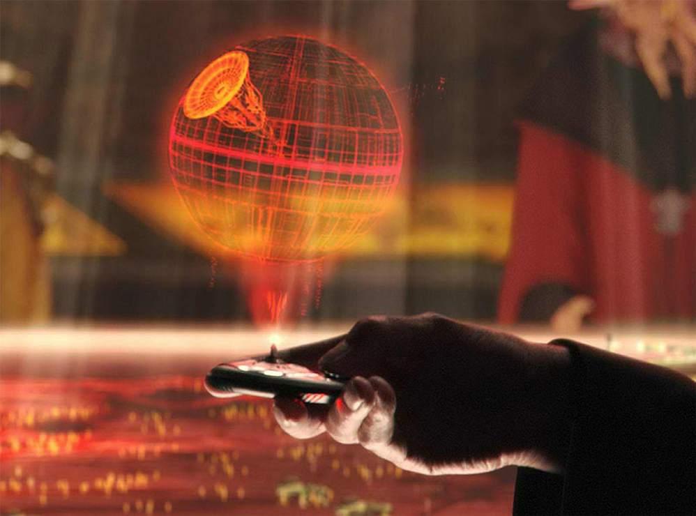
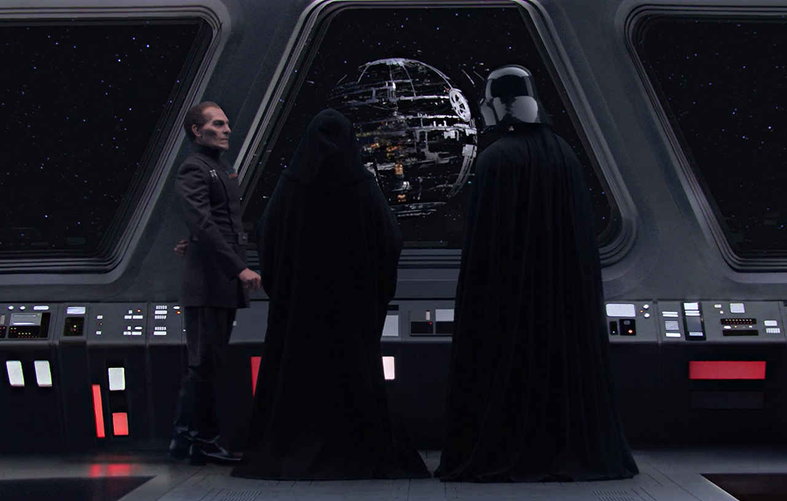
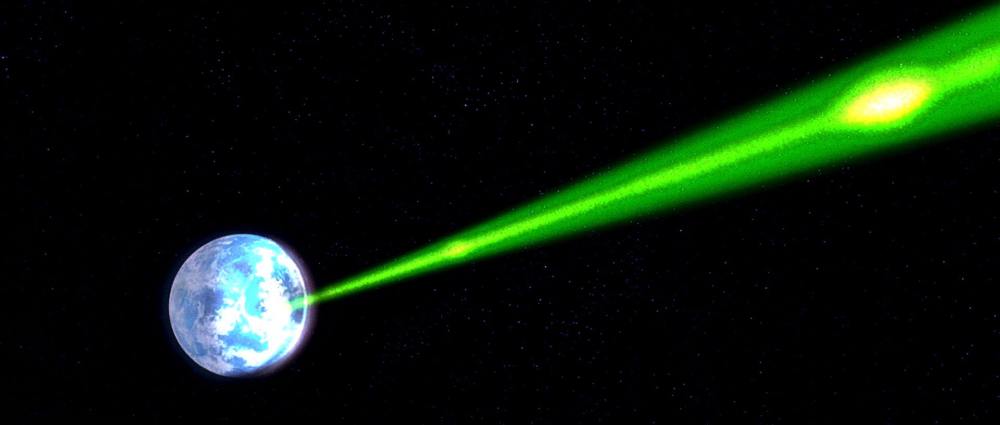
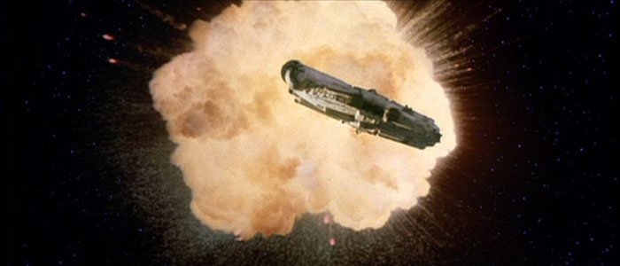
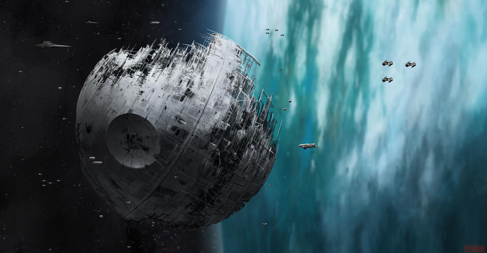
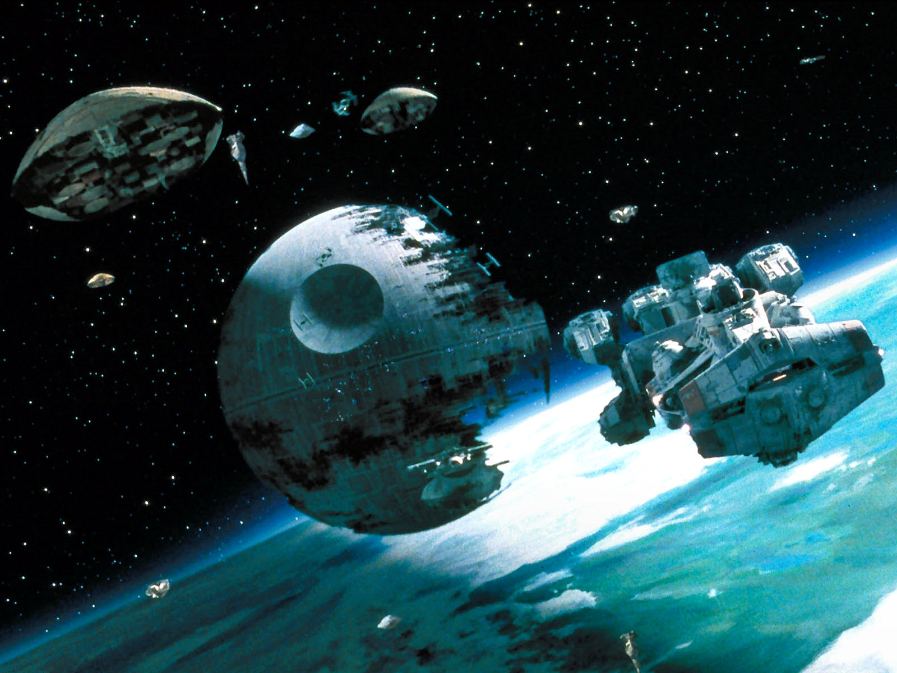
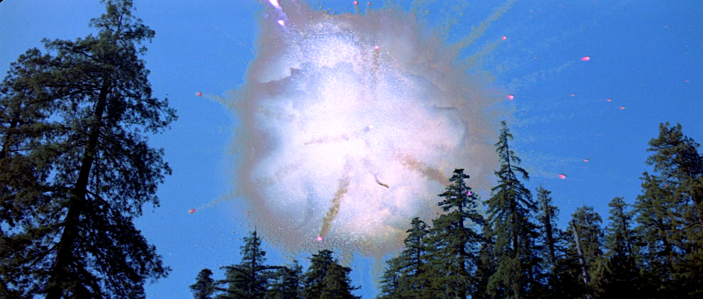

The Death Star was conceived during the period leading up
to the Clone Wars, 24 years before the Battle of Yavin.

16 BBY
With the Republic and the Separatists fully at war known as the Clone Wars,
Count Dooku, leader of the Separatist faction, must keep the plans a secret as
to not fall into the hands of the Republic and the Jedi.
17 BBY
With the Separatists defeated along with the rise of the Sith and
the destruction of the Jedi by means of Order 66, Emperor Palpatine and his
apprentice Darth Vader launch the beginning of construction of the Death Star.

19 BBY
To demonstrate the full power of the Death Star, Grand Moff Tarkin orders the
destruction of a rebel affiliated planet, Alderaan, as a show of power over the captive
princess Leia
30 BBY
With the Rebellion fully formed and the training of Luke Skywalker underway,
Skywalker and a squadron from the Rebel Fleet lead an attack on the Death Star, and scoring a victory
by destroying it.
35 BBY
The Empire suffering a devastating blow, the Emperor orders the rapid construction
of an already pre-constructed Death Star, dubbed Death Star II.
36 BBY
With the construction of Death Star II underway, the Empire deploy heavier assault
ships in larger quantity's along with Vader's personal warship the Executioner.
40 BY
With the location of the Death Star II now known to the Rebel Alliance, the Rebels
move into to attack the seemingly vulnerable Death Star II, only to fall into a trap layed by the Emperor.
40 BY
Luke Skywalker once again gains victory for the Rebels, defeating both the Emperor
and Vader, the young hero escapes the Death Star II right before it's destruction, bringing in a new era of peace
not knowing a new evil is coming their way.